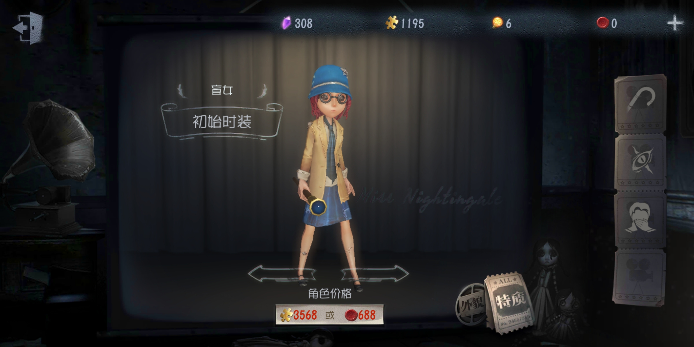

盲女

【人物介紹】
名字：海倫娜‧亞當斯
海倫娜在一歲時被高燒奪去了視力，但在父母和一位家庭教師的細心教導下，她仍然學會了讀書認字。然而海倫娜還有更大的野心，進入大學成為一位文學學士。也許歐利蒂絲莊園的主人能為她的學費買單？至少那封以盲文寫的邀請函上是這樣表達的。
【能力介紹】
回聲定位：
輕擊-用盲杖輕輕敲擊地面，通過聲波反射感知小範圍內監管者位置
重擊-用盲杖用力敲擊地面，迅速擴大聲波範圍，全圖感知監管者位置，並將監管者位置傳遞給自己的隊友，同時感知破譯過的密碼機及運動中的隊友。但她不能離開盲杖，無法攜帶其他物品。
羸弱：身體羸弱，板窗交互速度降低30%。
心眼：目盲使得盲女的其他感官更加敏銳，在破譯時幾乎不會觸發校準，破譯速度增加30%。
初始道具為盲杖，敲擊可得知監管者位置，她無法攜帶其他道具，通常是隊伍中的破譯主力，透過敲擊盲杖得知監管者位置並避開監管者。